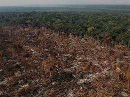

Desmatamento:
A degradação florestal explodiu na Amazônia em setembro e chegou aos 20.238 km², o que equivale a mais de 13 vezes a cidade de São Paulo. Essa foi a maior área atingida pelo dano ambiental dos últimos 15 anos. Destruição que ameaça gravemente a biodiversidade amazônica, um dos temas discutidos neste momento na Conferência das Nações Unidas para a Diversidade Biológica, a COP 16, em Cali, na Colômbia. Os dados são do instituto de pesquisa Imazon, que monitora o desmatamento e a degradação florestal na Amazônia por imagens de satélite desde 2008 e 2009, respectivamente. Em relação a setembro do ano passado, quando a área degradada foi de 1.347 km², houve um aumento de 15 vezes. A pesquisadora do Imazon Larissa Amorim explica que o desmatamento ocorre quando a vegetação é totalmente removida e a degradação quando a floresta é afetada pela exploração madeireira ou pelas queimadas, ambos danos ambientais que ameaçam espécies da fauna e da flora. “Setembro costuma ser um mês marcado pelo aumento dessas práticas na Amazônia, por estar dentro de um período mais seco. Porém, os números registrados em 2024 são muito mais elevados do que os vistos anteriormente. E a maioria dos alertas ocorreu devido à intensificação dos incêndios florestais ”, destaca.
